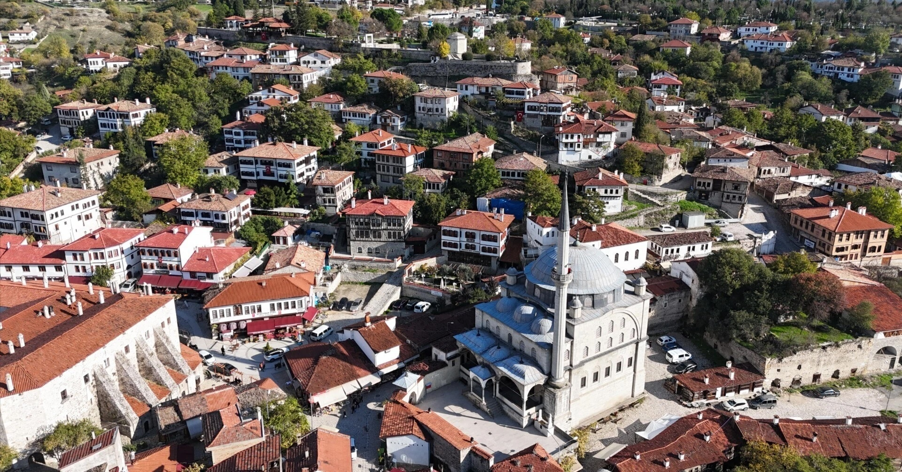
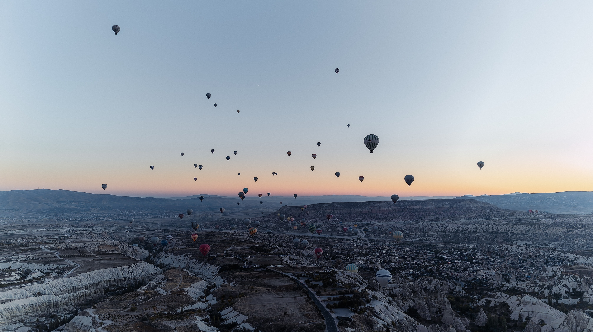
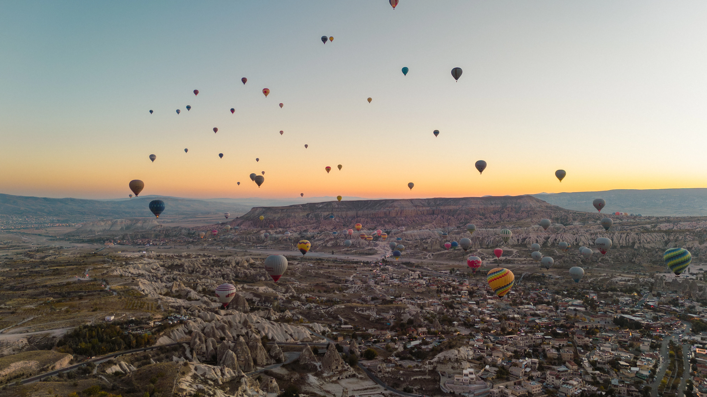
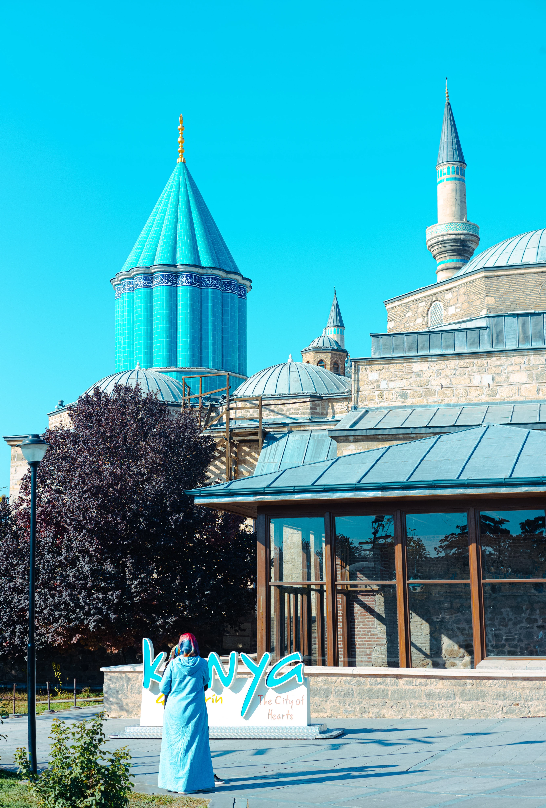
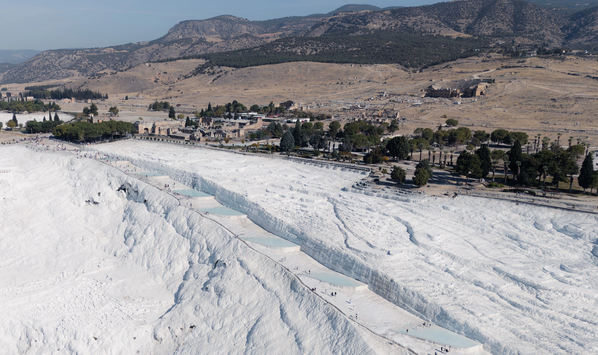
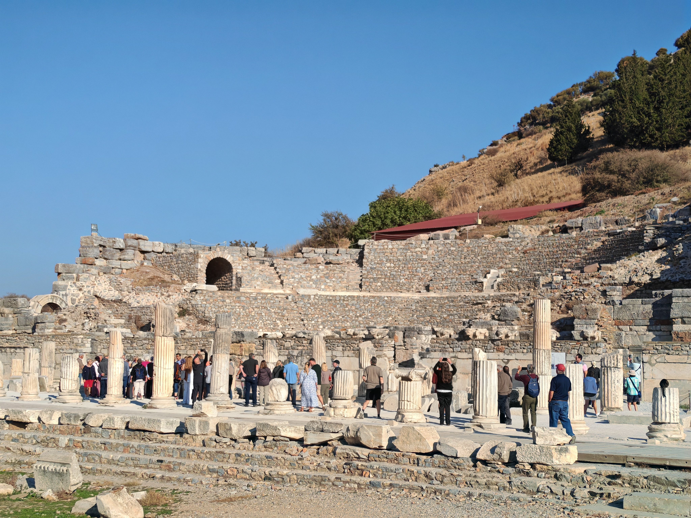
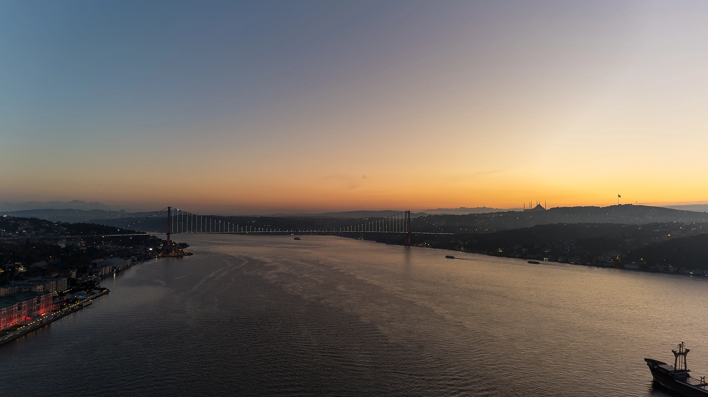

01
サフランボルの街
オスマン帝国時代の面影を色濃く残す世界遺産の街。赤い屋根と白壁の伝統的な木造家屋が1,000軒以上も現存し、石畳の坂道を歩けば17世紀から続くアラスタバザールの賑わいに出会えます。
Read Story
The grand journey from Istanbul to Cappadocia
カッパドキアの奇岩群、コンヤの旋回舞踊、パムッカレの白い石灰棚、エフェソスの古代遺跡、そしてイスタンブールの壮麗なモスク。
アジアとヨーロッパの架け橋、トルコ。東西文明が交わるこの地で出会った、言葉にならない美しさの記録。 Leica Mとドローンを片手に巡った、色彩と光に満ちた9日間の旅。

オスマン帝国時代の面影を色濃く残す世界遺産の街。赤い屋根と白壁の伝統的な木造家屋が1,000軒以上も現存し、石畳の坂道を歩けば17世紀から続くアラスタバザールの賑わいに出会えます。
Read Story
早朝の空に浮かぶ色とりどりの熱気球。ウチヒサル城塞、三姉妹の岩、ラクダ岩など個性豊かな奇岩群と、紀元前から続く地下都市カルダック。古代の人々の叡智が詰まった幻想的な大地です。
Read Story
エメラルドグリーンの塔が印象的なメヴラーナ博物館で、イスラム神秘主義の世界へ。右手を天に、左手を地に向けながら回転する旋回舞踊セマー。預言者ムハンマドの聖遺物からは、薔薇の香りが漂います。
Read Story
「コットンキャッスル」と呼ばれる白い石灰棚と、紀元前2世紀から続く温泉地ヒエラポリス。クレオパトラプールでは、水中に沈む古代の柱の間を泳ぎながら、ローマ帝国のテルマエ文化を体感できます。
Read Story
12万冊の蔵書を誇ったケルスス図書館、25,000人を収容した大劇場、そして猫たちがゆったりと暮らす古代ローマ遺跡。ナイキのロゴの原型となったニケのレリーフも必見です。
Read Story
ボスポラス海峡の夜明け、オスマン帝国の宮殿群、2万枚のイズニックタイルが美しいブルーモスク、そして教会からモスクへと姿を変えたアヤ・ソフィア。東西の文明が出会う永遠の都です。
Read Story